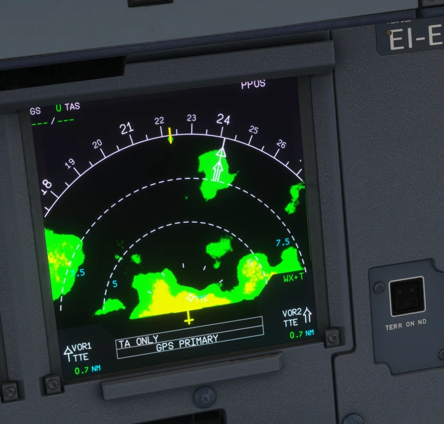
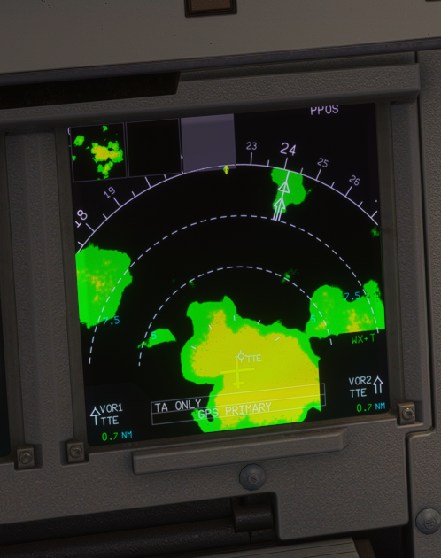

The A32NX ND had no working weather radar. A native gauge (ndwxr) now draws the MSFS weather radar on the CPT and F/O NDs, aligned with the range rings, in the colours of an airborne radar.


| Control | Position | ND |
|---|---|---|
| WX SYS knob | SYS 1 / SYS 2 | Radar on (system 1 or 2) |
| OFF | No radar | |
| MODE knob | WX | Precipitation |
| WX+T | Precipitation and turbulence (magenta) | |
| TURB | Turbulence only | |
| MAP | Nothing (no ground map) | |
| EFIS | ARC or ROSE NAV | Radar shown (forward half); nothing on ROSE ILS, ROSE VOR, PLAN |
The selected mode is written in green on the ND (see the PR 3 manual).
| Colour | Rain rate | Meaning |
|---|---|---|
| Green | from 0.7 mm/h | Light precipitation |
| Yellow | from 4 mm/h | Moderate |
| Red | from 12 mm/h | Heavy: avoid |
| Magenta | above 20 mm/h, within 40 NM | Turbulence (WX+T, TURB) |
The engine's rain rate is noisy pixel by pixel; each level is smoothed, so the picture shows solid areas with crisp edges.
| Situation | What you should see |
|---|---|
| On the ground | Nothing drawn: like a real radar, it does not transmit with both main gear compressed. |
| Clear sky | No picture (nothing to return). |
| WX SYS OFF, or MODE MAP | No picture. |
| CPT and F/O NDs | Independent: each ND uses its own IR position (IR 1 CPT, IR 2 F/O, IR 3 by the ATT HDG knob) and its own range and mode; the two knobs are shared. |
| Limitation | Why | What to do |
|---|---|---|
| Turbulence is a proxy. | MSFS gives no turbulence data; rain above 20 mm/h within 40 NM is drawn magenta. | - |
| No tilt, no gain. | The MSFS radar has neither. | - |
| Drawn only airborne with weather around. | The MSFS radar image needs both. | Test with the MSFS weather presets. |